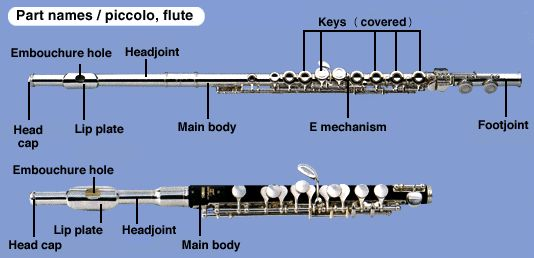

The Flute
The flute is a musical instrument of the woodwind family (flute, oboe, clarinet, saxophone, bassoon) that dates back to over 40,000 years ago and has been used by nearly every civilization. The modern orchestral flute is made out metal and came as a descendant of the recorder. The flute is a soprano voice that sometimes carries melodies in the orchestra, although more often it will add decorative ornaments or play the descant (high) part. The flute family includes the piccolo, a small flute used to play very high and piercing notes. In the orchestra, the flutes are usually seated on stage right in the front row of winds and brass.
Jokes
How do you get two piccolo players to play in tune?
Shoot one of them.